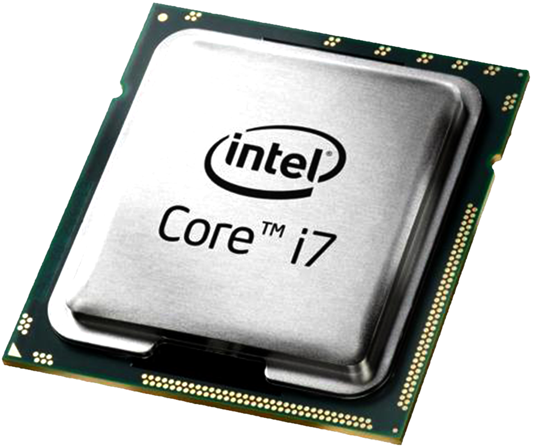
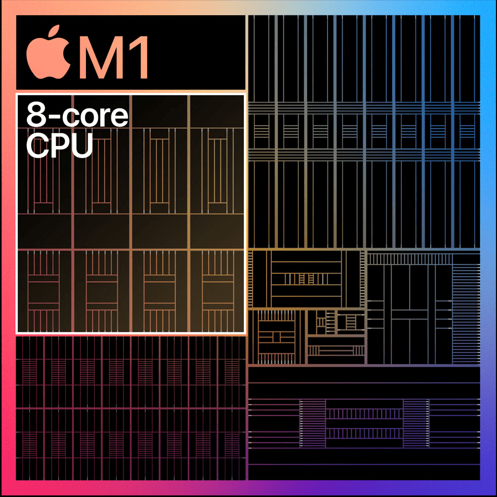

Компʼютери Mac
Еволюція Mac: Від класики до Apple Silicon
Історично комп'ютери Mac працювали на процесорах від Intel, які використовували класичну архітектуру x86. Це були потужні машини, але вони мали суттєві обмеження щодо енергоспоживання та тепловіддачі.
У 2020 році компанія зробила революційний крок, представивши власні чипи серії Apple M-Series (побудовані на мобільній архітектурі ARM). Унікальність полягає в тому, що процесор, графіка та уніфікована пам'ять об'єднані на одному кристалі. Завдяки цьому системі не потрібно витрачати час на пересилання даних туди-сюди — навіть базові 8 ГБ об'єднаної пам'яті працюють так само ефективно і швидко, як 16 ГБ на старих системах.
| Критерій | Старе покоління (Intel) | Нове покоління (Apple M) |
|---|---|---|
| Візуальний вигляд |  |  |
| Детальні специфікації | Сайт Intel | Сайт Apple Mac |
| Тип інструкцій | Складна архітектура (CISC), високе споживання енергії. | Спрощена архітектура (RISC), оптимізована під енергозбереження. |
| Реальний досвід використання | ||
| Енергоефективність та Комфорт | Батарея тримає 5-7 годин. Потрібно завжди носити з собою зарядку. | Батарея тримає 15-22 години. Можна спокійно йти на пари чи в офіс без блоку живлення. |
| Під навантаженням сильно гріється, кулери голосно шумлять. | Залишається холодним. Працює абсолютно безшумно (кулери вмикаються вкрай рідко). | |
| Продуктивність (Ігри та Робота) | Ноутбук повільніше виходить зі сну. Важкі ігри йдуть зі скрипом. | Миттєвий вихід зі сну. Легко тягне ААА-ігри (наприклад, Baldur's Gate 3) та важкі середовища розробки. |